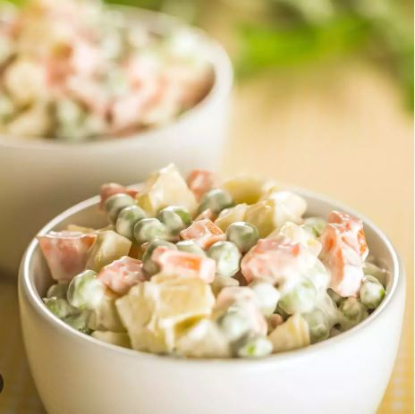
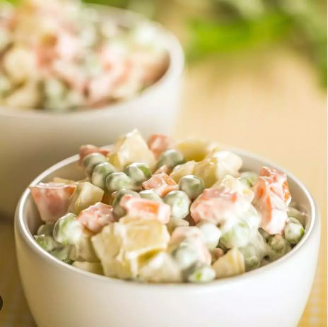

Ingredients of Russian Salad
- 300 gm chicken
- 1 tablespoon vegetable oil
- 2 medium diced carrot
- 1/2 medium cubed capsicum ( green pepper)
- salt as required
- 1 tablespoon vinegar
- 1/2 cup peas
- 10 chopped green beans
- 100 gm sliced pineapple
- black pepper as required
For Topping
- 3/4 cup mayonnaise
- 1 tablespoon cheese spread
- 1/4 cup fresh cream
How To Make Russian Salad
Step 1 Wash and boil chicken
Wash the chicken properly and drain the excess water. Then, boil it with ½ cup water and ½ tsp salt in a pressure cooker.
Step 2 Prepare the chicken
Pressure cook for 1 whistle and simmer on low heat for 1-2 minutes. Switch off the flame. After it cools down, remove the flesh from the bones and cut it into small pieces. Put the pieces in a bowl and add 1 tbsp vinegar and 1 tbsp oil to it. Keep aside for 15 minutes.
Step 3 Boil the veggies
Boil 2 cups of water with ½ tsp salt. Add peas, beans and carrots and boil further for 1 minute. Remove from flame and strain. Add cold water and strain again. Keep vegetables aside. Mix mayonnaise, cream, cheese spread, salt and pepper. Mix well. Squeeze pineapple slices well to remove excess juice if you are using the canned ones. Chop them finely.
Step 4 Assemble the ingredients
Add shredded chicken. You can alternately use boiled potato or paneer in its place if you are a vegetarian. Then add chopped pineapple and all the veggies to the mayonnaise. Mix well. Taste and adjust seasonings if needed. Add more pepper if you want to amp up the spice. Keep aside till serving time.
Step 5 Serve the salad
To serve, add a little milk to the salad if it appears extra thick. Serve cold. Do try this delish recipe, rate it and let us know how it turned out to be.
TIPS
- You can add more vegetables and fruits to the salad based on your preference
- You can use coconut or soy milk instead of dairy milk while serving if you want to keep your salad healthy.
- Put your salad in an airtight container and store in the fridge. Serve once its cold with toasted garlic bread.